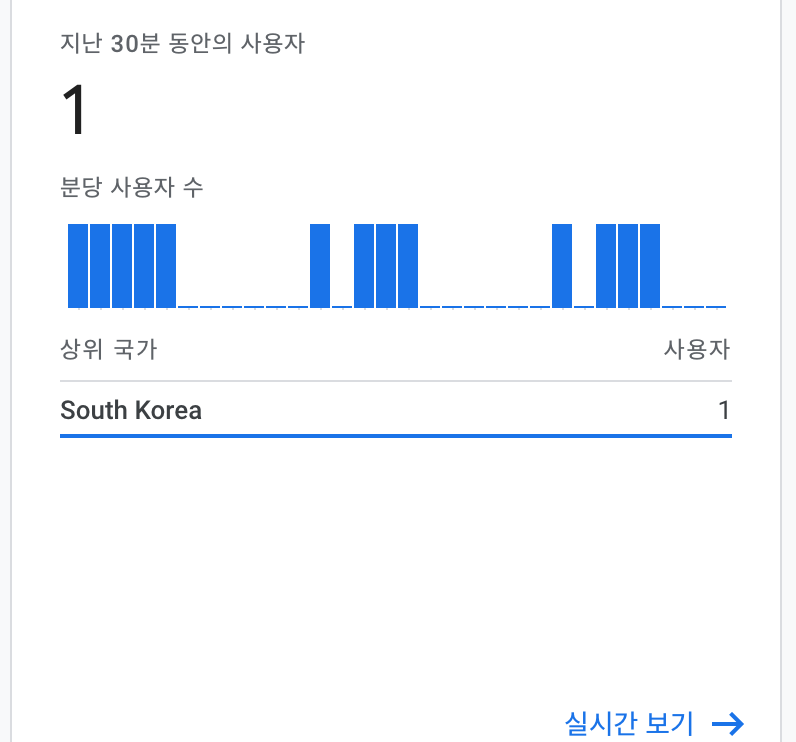

Google Analytics 4
내 블로그의 정적 웹사이트 호스팅 플랫폼은 hugo를 쓰고 있다.
예전에 잠깐 썼던 Jekyll 플랫폼과 비교했을 때 배포속도도 빠르고 테마 문서도 잘 되어있어서 편하다 ㅎㅎ
원래 SEO에 대해 신경 쓰지 않고있다가, GoogleAnaytics와 GoogleSearchConsle을 적용시켜보려고 이것저것 시도해봤지만, 아직도 구글 애널리틱스 보고서에는 방문자가 0이다..
(사실 진짜 0명인줄 알았으나 내가 들어와있어도 실시간에는 0이다..)
새로운 추적 ID
구글링을 통해 알아본 휴고에 구글 애널리틱스 적용하는 글들을 보면, config.toml에 GoogleAnalytics변수에 그냥 추적 ID를 넣으면 끝이라는 내용이 많아 실제로 그렇게 해보았는데 적용이 안되고 있다.
그리고 대다수의 사용자 추적 ID는 GA-XXXXXXX..으로 되어있는데 나는 G-XXXXXXXX.. 이렇게 조금 다르기도 하다.
다시 구글링을 해 본 결과, 현재 시점에선 GoogleAnaytics의 버전이 4이며 휴고 테마에서 GA 설정을 지원해주지 않는 이상 스크립트 태그를 직접 넣어야된다는 사실을 알게 되었다..
Goole Analytics4 적용 방법
먼저 필자의 Hugo 테마는 stack theme를 사용하고 있다.
이 테마는 아직 GoogleAnaytics에 대한 설정 컴포넌트가 존재하지 않아 직접 해보기로 하였다.
1. GoogleAnalytics4 가입하기
먼저 구글 계정으로 GoogleAnalyticd4 페이지에서 로그인한다.
로그인 후 측정시작 버튼을 눌러 구글애널리틱스 계정을 생성하면된다.
참고로 구글 ID와 별개로 계정을 생성할 수 있으며 원하는 ID로 만들면된다. 그 후 속성 이름도 사이트에 걸맞는 속성이름으로 짓자.
2. 추적 ID 가져오기
GA에는 고유적으로 추적에 사용할 ID가 주어지는데 GA관리자 화면서 하단 관리 -> 데이터 스트림 -> 스트림 항목을 클릭하면 측정 ID를 얻을 수 있다. (양식은 G-XXXXXXXXX)
3. Hugo에 적용시키기
이제 이 추적 ID를 휴고에 적용시키면 끝!
config.toml에 추적 ID를 사용 할 변수로 지정해놓는다.
1[params]
2googleAnalytics = "G-XXXXXX"
3.
4.
구글 애널리틱스에서 제공하는 온페이지 태그를 추가해야한다.
휴고에서는 보통 ./layout/partials디렉토리에 사이드 html을 작성해주기 때문에 구글 애널리틱스 스크립트를 위한 html을 작성한다.
Site.Params부분에 config.toml에 정의한 추적 ID 변수를 적어주면 된다.
1<!-- layout/partials/google-analytics.md-->
2<script async src="https://www.googletagmanager.com/gtag/js?id={{ .Site.Params.googleAnalytics }}"></script>
3<script>
4 window.dataLayer = window.dataLayer || [];
5
6 function gtag() {
7 dataLayer.push(arguments);
8 }
9 gtag('js', new Date());
10
11 gtag('config', '{{ .Site.Params.googleAnalytics }}');
12</script>
이제 휴고 블로그에 모든 페이지에서 이 스크립트를 로드해주면 된다.
보통 전역에서 사용할 html은 /layout/_default/baseof.html에 작성한다.
1<head>
2 {{ if .Site.Params.googleAnalytics }} {{ partial "google-analytics.html" . }} {{ end }} {{- partial "head/head.html"
3 . -}} {{- block "head" . -}}{{ end }}
4</head>
여기까지 설정하면 구글애널리틱스에서 접속 현황이 잘 노출이된다!
깃에 배포하고 다시 블로그에 들어가면 아래 사진 처럼 잘 나오는 것을 확인할 수 있다.
